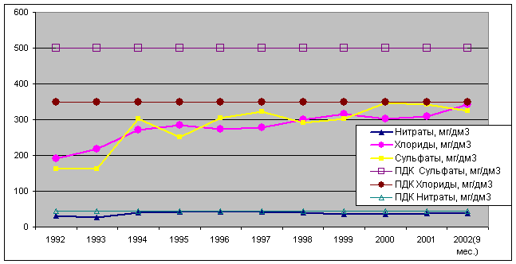
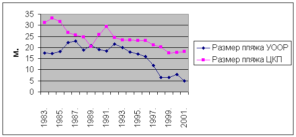
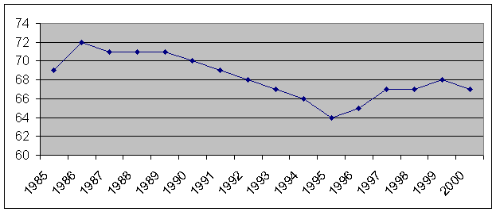
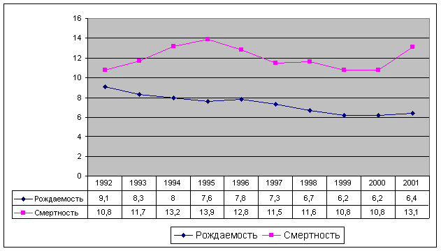
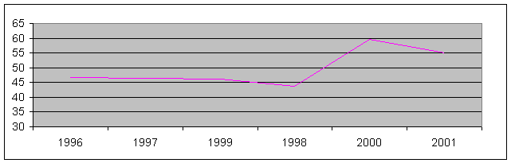

ОБЩЕСТВЕННАЯ ОРГАНИЗАЦИЯ
"МЕСТНЫЕ ЭКОЛОГИЧЕСКИЕ ДЕЙСТВИЯ"
| ОБЩЕСТВЕННАЯ ОРГАНИЗАЦИЯ "МЕСТНЫЕ ЭКОЛОГИЧЕСКИЕ ДЕЙСТВИЯ" |
| |
ГЛАВНАЯ
|
НОВОСТИ |
БЮЛЛЕТЕНЬ |
УСТАВ |
ТЕКУЩИЕ ПРОЕКТЫ |
ФОТОГРАФИИ |
ОПИСАНИЕ СОСТОЯНИЯ ОКРУЖАЮЩЕЙ СРЕДЫ | |
| ОПИСАНИЕ ОКРУЖАЮЩЕЙ СРЕДЫ Г. ЕВПАТОРИЯ, 2003
|
ОБЩЕСТВЕННАЯ ОРГАНИЗАЦИЯ МЕСТНЫЕ ЭКОЛОГИЧЕСКИЕ ДЕЙСТВИЯ т. 8-06569-20288, e-mail: leap@seavenue.net ОПИСАНИЕ ОКРУЖАЮЩЕЙ СРЕДЫ Г. ЕВПАТОРИЯ 2003 Введение Евпатория расположена в юго – западной части степного Крыма на побережье Евпаторийской бухты мелководного Каламитского залива Черного моря. Город простирается на 24 км вдоль побережья, где удачно сочетаются элементы морского и степного климата. Основными природными и лечебными факторами курорта являются сульфидные грязи Сакского озера, лечебная рапа Мойнакского озера, а также приморско-степной климат и песчаные пляжи, что и определило значение Евпатории, как климатического и бальнеологического курорта. Территория Евпатории по рекреационным ресурсам имеет индекс кадастровой оценки - 955,7, то есть почти столько же, во сколько оценены рекреационные ресурсы всего Крыма. Береговая полоса на протяжении более 50 км покрыта мощным слоем мелкого песка. Ширина ее колеблется от нескольких метров до 70 м в юго-западной части города. Морское дно, устланное мелким бархатистым песком, понижается до глубины моря до 5 м, с уклоном 0,015 – 0,025. В окрестностях Евпатории расположен ряд соленых озер-лиманов, на дне которых залегает слой иловой грязи. Наибольшей популярностью пользуется озеро Мойнаки, лечебная рапа, которого содержит более 50 г/л различных солей. Основными почвообразующими породами в Евпаторийской зоне являются понтийские,
меотийские и сарматские известняки. Почвенный покров сформировался в условиях
засушливого степного причерноморского климата под ковыльно–типчаковой,
полыно–злаковой, лугово–степной растительностью. В настоящее время на
данной территории преобладает культурная растительность 1. Состояние грунтовых вод (уровень и характер загрязнения грунтовых вод, источники загрязнения, запас питьевой воды, качество питьевой воды). Источники водоснабжения г. Евпатории – подземные. Водоносные горизонты: Сарматский и Тортонский. Запас питьевой воды: Нормативное расчетное водопотребление для города Евпатории и его поселков составляет 128 тыс. м3/сутки. Эксплуатационные запасы подземных вод по всем источникам водоснабжения г. Евпатории и поселков составляют 101,1 тыс. м3/сутки, но эксплуатировать водоносные горизонты с такой интенсивностью запрещено, так как резко увеличивается минерализация питьевой воды. Суточный лимит водозабора подземных вод 89,9 тыс. м3/сутки определен разрешением на спецводопользование. Дефицит составляет 38 тыс. м3/сутки, а в период курортного сезона он значительно возрастает за счет неорганизованных отдыхающих. Вода подается потребителям с насосной станции 2 подъема в следующем режиме:
Качество питьевой воды представлено на рис. 1 и в приложении 1.  рис. 1. Динамика некоторых показателей качества питьевой воды водозабора Чеботарка. Повышение минерализации в пределах Чеботарского водозабора объясняется двумя причинами: 1. Подтягивание некондиционных соленых вод по пласту, так как выше по потоку в северо-западном направлении от водозабора развиты воды с минерализацией более 3,0 г/дм3; 2. Переток более высокоминерализованных вод из вышележащих водоносных горизонтов. Минерализация подземных вод понт-мэотических отложений составляет 1,8 г/дм3 и существуют гидродинамические предпосылки для перетока сверху, так как пьезометрические уровни водоносного горизонта понт-мэотических отложений устанавливается на отметках на 2,0 – 4,5 м. выше, чем в эксплуатационном горизонте. В настоящее время наблюдается повышение уровня грунтовых вод, которые в виде родников фильтруются в оз. Мойнаки и Сасык-Сиваш. Основная причина повышения уровня грунтовых вод – поступление из двух ветвей Северо-Крымского канала. Вода фильтруется из каналов в результате их разрушения и при поливе, всего для изучаемого понт-миотис-сарматского комплекса – 320 тыс.м3 в сутки, т.е. почти столько же, сколько поступает в водоносный горизонт из естественных областей питания. В результате уровни подземных вод в степном Крыму повысились по опорным гидрологическим скважинам на два, четыре и шесть метров. Рассчитать, когда и на сколько может повыситься уровень грунтовых вод на территории города без наблюдательных скважин не возможно. Процесс повышения уровня продолжается и становится в последние 4 года интенсивным. Источником загрязнения грунтовых вод являются поглощающие колодцы санаториев «Смена», «Евпатория», «им. Т.Г. Шевченко» и «Искра» , куда сбрасывается послепроцедурная вода и вода из бассейнов.
2. Состояние поверхностных вод (описание гидрологической сети, характеристика стока, уровень водообмена, уровень загрязнения вод в речках – перечень веществ и количественные данные по каждому объекту, источники загрязнения – название, характер и объем веществ-загрязнителей). Общие сведения о поверхностных водоемах курорта Евпатория. Курорт Евпатория расположен на побережье Черного моря. На территории курорта расположены лечебное минеральное озеро «Мойнаки» и лиманы озера Сасык-Сиваш.
Замеры уровня Черного моря производятся Евпаторийской метеостанцией, расположенной в морпорту. За последние 31 год среднегодовой уровень изменялся от 471 до 491 см. в Балтийской системе координат. Среди многочисленных источников загрязнения морской воды следует считать стоки: а) глубоководный выпуск от городских канализационных сооружений, протяженностью 1,2 км, не обеспечивающий вынос стоков далеко в море (установленные показатели по БПК – 8,7 мг/дм3, взвешенным вещ-вам – 9,9 мг/дм3; фактические показатели по БПК5 – 8,7 мг/дм3, взвешенным вещ-вам – 15,0 мг/дм3, фосфатам – 6,8, нитритам – 45,2; сульфатам – 361; хлоридам – 660); б) выпуски сточных вод (4) от бассейнов и грязелечебниц санаториев, протяженностью до 300 м, что приводит к накоплению различных загрязнений в прибрежной зоне. Канализационная система г. Евпатории. Бассейн канализования основной части города сконцентрирован на главную КНС, с которой стоки подаются на Мойнакскую КНС. С Мойнакской КНС сточные воды перекачиваются на КОС. Их проектная производительность – 63,0 тыс. м3/сутки. Год ввода в эксплуатацию – 1975. Последняя реконструкция в 1999 году. Установленные показатели по: БПК – 8,7 мг/дм3; взвешенным вещ-вам – 9,9 мг/дм3. Фактические показатели по: БПК5 – 8,7 мг/дм3; взвешенным вещ-вам – 15,0 мг/дм3. Фосфаты – 6,8, нитритам – 45,2; сульфатам – 361; хлдоридам – 660. Глубоководный выпуск очищенных сточных вод в Черное море Д=1220 мм, протяженностью 1460 м. Всего в Евпатории 12 канализационных насосных станций. В городе – 138,3 км канализационных сетей, в том числе:
Из них износ имеют:
Канализационные очистные сооружения – 2 комплекса: КОС г. Евпатории. Стоки поступают на КОС по напорному коллектору от Мойнакской КНС. Другие источники загрязнения Черного моря: усиливающаяся миграция морских судов, которые нередко становятся источниками загрязнения акватории бытовым мусором и иногда льяльными водами, а также отсутствие единой системы ливневой канализации с очисткой стоков. Существует 7 точек выпуска неочищенных ливневых стоков в курортной зоне в море и 3 в лиманы оз. Сасык-Сиваш (приложение 6)
Озеро расположено на западной окраине г. Евпатория, вытянуто с юго-запада на северо-восток, отделено от Черного моря песчаной пересыпью. В северной части озеро разделено насыпной дамбой, имеющей ширину до 3 м, на техническую и лечебную части. Ранее лечебная и техническая части были соединены перетоком, с 1999 года это два отдельных водоема. Наибольшая длина озера около 2 км., ширина от 850 до 900 м. Длина береговой линии озера порядка 6,0 км., площадь водного зеркала 1,8 км2, максимальная глубина 0,9-1,1 м., площадь водосборного бассейна 36 км2. Озеро является устьевой частью Мойнакской балки. По побережью озера наблюдается пластовые выходы подземных вод и родники. Самая северная оконечность озера в настоящее время является технологической частью ДП «Грязелечебница «Мойнаки», здесь расположены бассейны регенерации лечебной грязи грязелечебницы, в эту часть осуществляется сброс послепроцедурных вод с грязелечебницы. Состав рапы озера «Мойнаки» хлоридный натриевый. Среднегодовая минерализация рапы в 2001 г. составила 55 г/л. По сравнению с 1971 г. уменьшилась почти в два раза, в 1947 году в рапе содержалось 180 граммов солей на литр раствора. Основная причина распреснения озера Мойнаки – это изменение общей гидрогеологической обстановки под влиянием работы Северо-Крымского канала.
Озеро «Мойнаки» - расположено в западной части г. Евпатории Е = 1,8 км2, Е= зеркало 1,65 км2 тол. глуб = 0,9 м. Необходимо: бальнеологическое исследование озера
В 2002 году был проведен анализ питьевой воды,
взятой из под крана в 7 точках города учащимися и преподавателем СОШ №12
(см. табл.). Анализ проведен в химико-аналитической лаборатории крымского
филиала Института гидротехники и мелиорации Украинской академии аграрных
наук (г. Симферополь, тел. 22-53-08).
Табл. Результаты анализа воды г. Евпатория
Сети водоснабжения. На балансе ППВКХ состоит 382,1 км водопроводных сетей города Евпатории, пгт Мирный и Новоозерный, в том числе:
В связи с огромной дебиторской задолженностью, которая на 15.07.2001 года составляет 10,43 млн. грн предприятие не имеет возможности производить замену самортизированных сетей в городе. Норматив потерь воды из-за повреждения распределительной сети равен 7 775,6 тыс. м3/год. Общий норматив потерь воды из-за повреждения водоводов и распределительной сети равен 8 309,3 тыс. м3/год. (по расчету КГПИ ПОКС «Крымкоммунпроект» за 1999г.) Кризисные участки водовода (полностью самортизированные сети по городу)
Источники информации: Евпаторийский ППВКХ Городская СЭС Институт мелиорации и водных ресурсов г. Симферополь. Управление экономики Евпаторийского горсовета
4. Почвы и их состояние (описание почв, перечень веществ-загрязнителей, количественный характеристики, источники загрязнения – название, объем и характер загрязнения). Основными почвообразующими породами в Евпаторийской зоне являются понтийские, меотийские и сарматские известняки. Почвенный покров сформировался в условиях засушливого степного причерноморского климата под ковыльно–типчаковой, полыно–злаковой, лугово–степной растительностью. В настоящее время на данной территории преобладает культурная растительность. Расчлененность рельефа территории обеспечивает достаточный естественный дренаж, в связи с чем почвы курортного района пригодны для орошения. Однако, учитывая тяжелый механический состав и засоленность плиоценовых глин, при орошении может образоваться верховодка, в связи с этим возможно заболачивание или вторичное засоление. Необходим контроль за уровнем грунтовых вод. Почвы города испытывают значительную антропогенную нагрузку. Система очистки почв от хозяйственно-бытового мусора далека от совершенства, из-за отсутствия средств недостаточно контейнеров, многие площадки не благоустроены и не ограждены, недостаточно число дворников (от 210 летом до 150 в межсезонье, вместо требуемых 1000 штатных единиц, как было в 80-е гг). Особенно остро стоит проблема чистоты пляжей. В летний период антропогенная нагрузка на пляжи возрастает на несколько порядков. С такими резкими перепадами загрязненности территории, коммунальные службы не справляются. Из-за отсутствия финансирования не выносятся из 1-2 зон охраны курорта ряд предприятий и хозяйственные дворы, в старой части города отсутствуют городские канализационные сети, жители пользуются выгребами. Остается сложной ситуация с утилизацией промышленных отходов люминисцентных и ртутьсодержащих ламп, автошин, аккумуляторов и гальваношламов (завод «Вымпел», ОМЗ, автомастерские). По данным Западно-Крымской региональной госэкоинспекции, только в Евпатории в 2001 году было вывезено на свалку и подверглись уничтожению путем сжигания и захоронения 192,7 тыс. м3 ТБО, причем большая их доля приходится на месяцы курортного сезона с мая по сентябрь (около 30 тыс. м3 в месяц). Исключительно отрицательное влияние на экологическую обстановку в Евпатории (особенно в период летнего курортного сезона) оказывает отсутствие соответствующих мощностей для поддержания на должном уровне санитарного состояния территории города. В городе по состоянию на 01.11.2002. насчитывается 121 контейнерная площадка, контейнеров 598 (628 по данным КП Эковторма), в том числе на площадках – 428, в 9-ти этажных домах с мусоропроводами – 170. По норме с учетом летнего времени необходимо 1029 контейнеров, что составляет 61% укомплектованности. Практически с начала 2002 года установлено дополнительно 148 ед., в том числе 15 с крышками на колесах. Отремонтировано ограждений контейнерных площадок – 9, обустроено новых –3 (ул.Тимирязеа, сквер Коммунаров, ул. 60 лет Октября 18). Необходим ремонт и обустройство еще на 23 площадках с установкой 126 контейнеров (см. табл. 1) Табл. 1.
В летний период из-за нехватки контейнеров и технике несвоевременно вывозится мусор, несмотря на то, что необходимо очищать контейнерные площадки минимум два раза в день. В результате – грязь, мухи, смрад, антисанитария. На санитарной очистке города по сбору ТБО работает спецтехника, в том числе:
Почвы парков, скверов, улиц испытывают загрязнение в результате выгула домашних животных в непредназначенных местах. Решением сессии городского совета №328 от 30.12.1999 «О мерах по упорядочению содержания домашних животных» определены следующие территории для выгула:
Все предприятия г. Евпатории, где возможно образование токсических промышленных отходов, находятся на контроле горСЭС: АПКП «Вымпел», ОА «Опытно-механический завод», ГП «Евпаторийский авиаремонтных завод». Все токсические отходы можно условно разделить на 2 группы: отходы гальванообработки деталей, люминесцентные лампы. Для нейтрализации сточных вод от гальванического участка Опытно-механического завода был оборудован подземный каменный железобетонный резервуар-нейтрализатор. Очищенные сточные воды сбрасывались в городскую канализацию под контролем ведомственной лаборатории ППВКХ. В настоящее время участок размонтирован и стоков не имеет. Накопленные ранее сухой остаток помещен в герметичную емкость и хранится на бетонированной площадке территории. Отходы гальваники завода «Вымпел» поступают по результатным системам (кислотная и щелочная) в 2 накопительных резервуара. Из накопителей последовательно – в нейтрализатор, затем в вертикальные отстойники. Очищенные сточные воды сбрасываются в городскую канализацию под контролем ведомственной лаборатории ППВКХ. Сухой остаток сбрасывается в бункер, откуда по мере необходимости вывозится в спецхранилище (12 накопительных емкостей по 50 м каждая). Учитывая, что объем производства резко сократился, количество поступающих токсических промотходов значительно уменьшилось. Обработанные ртутные лампы наружного освещения поступают на предприятие «Горсвет», где хранятся в специально отведенном месте в заводской упаковке. Для утилизации лампы организованно вывозятся в г. Горловка Донецкой области. На 2001 г. на предприятиях разрешено размещение:
5. Состояние воздуха (уровень загрязнения районов города, перечень веществ-загрязнителей, источники загрязнения – название, характер и объем выбросов). За 2001 год 34 предприятия города имели выбросы вредных веществ в атмосферу, это на 21,4 % больше, чем в 2000 году. Также это 7,2 % от предприятий, имеющих выбросы по Автономной Республике Крым. Количество источников выбросов в среднем на одном предприятии в 2001 году составило 9 единиц. Объемы выбросов вредных веществ по г. Евпатории в 2001году увеличились по сравнению с 2000 годом на 31,043 тонны, рост составил 10,1 %. В среднем выброшено одним предприятием 9,990 тонн. Объем выбросов вредных веществ в расчете на 1 км2 территории увеличился на 10,1 % по сравнению с 2000 годом. По АРК аналогичный показатель по сравнению с 2000 годом уменьшился на 2,5 %. Увеличение объемов выбросов загрязняющих веществ в атмосферу произошло из-за увеличения количества предприятий. Объемы выбросов специфических загрязняющих веществ, поступающих в атмосферу, составляют 133,277 тонн, что на 7,865 тонн меньше, чем в 2000 году (снижение составило 5,6 %). Удельный вес этих выбросов составил 1,3 % от всех аналогичных вредных веществ поступающих в атмосферу по всему Крыму (в 2000 году это 1,4 %). В среднем одним предприятием объем выбросов специфических загрязняющих веществ составил 4,052 тонны (в 2000 году – 5,446 тонн). В общем объеме выбросов вредных веществ в атмосферу в 2001 году 33,6 % составили оксиды азота (31,9 % в 2000 году). Оксиды азота образуются при сжигании всех видов топлива (газ, мазут, твердое топливо). Очистка продуктов сгорания от оксидов азота технически сложна и в большинстве случаев экономически нерентабельна, но образование этих вредных веществ можно значительно снизить. На предприятиях, имеющих котельные установки, выбор высоты и диаметра дымовой трубы производят из условий необходимого рассеивания в атмосфере вредных веществ. Кроме этого, для полноты сгорания топлива путем регулировки соотношения «газ (топливо)- воздух проводится наладка горения котлов. На основании чего составляется режимная карта. Работа по которой обеспечивает минимальную концентрацию вредных веществ в уходящих газах. В 2001 году обследован автотранспорт 14 предприятий (гаражи предприятий Минздрава, Минобороны, Минтранса, Госводхоза и санаторно-курортных учреждений) – 269 автомобилей, на транспортных магистралях обследовано 108 машин. По выявленным нарушениям госэкоинспекцией оштрафовано 45 человек. Лабораторный контроль за уровнем загрязнения атмосферного воздуха осуществляется на стационарной точке (горСЭС). Контрольный счет максимальной транспортной нагрузки проводится в часы «пик» на маршрутных точках контроля. Максимальная транспортная нагрузка в 2001 году отмечена в марте – 492. В 2001 году исследовано 588 проб атмосферного воздуха, из них с отклонениями – 11 (1,87%). В 2000 году эти показатели составили соответственно 664 пробы, 15 – с отклонениями (2,8 %). Среднесуточные концентрации ингредиентов – ниже ПДК (см. табл. 1, 2 и приложение 2). Табл. 1
Табл. 2
Источники информации: Городская СЭС Управление экономики Евпаторийского горсовета Управление статистики Евпаторийского горсовета 6. Климатические условия (направление ветра, количество осадков, температура и т.д.) Специфика нашего курорта во многом определяется климатом, для которого характерно обилие солнца и тепла. Климат Евпатории весьма благоприятный, приморско-степной, умеренно-влажный. Расположен город в западной части Крымского полуострова, на пологом берегу Евпаторийской бухты, в северной части Каламитского залива Черного моря. Географические координаты: северная широта 450 12’, восточная долгота 330 22’. Ровная поверхность степей, которые прилегают к городу с севера и северо-востока, постепенно уходит под воду, поэтому даже на значительном расстоянии от берега море очень мелкое. В климате Евпатории своеобразно сочетается влияние моря и прилегающих к нему обширных степных пространств. Море, являясь огромным резервуаром тепла, уменьшает суточные и годовые колебания температуры воздуха, а также сокращает холодный период года. В холодное время года оно повышает температуру воздуха, в теплое – снижает. В силу своего южного географического положения Евпатория получает большое количество солнечного тепла. За год 122,2 ккал/см2. Среднегодовая температура воздуха 11,5°. Средняя температура зимы 1,2°, лета - 22,5°. Наиболее жарким месяцем является июль со средней температурой 23,5°. Самым холодным – январь, среднемесячная температура + 0,1°. Лето в Евпатории очень теплое и засушливое. Нередки жаркие дни, когда максимальная температура может доходить до 40°. Зима мягкая, средняя продолжительность безморозного периода 205 дней. Но иногда, при вторжении арктического воздуха, наблюдается резкое понижение температуры воздуха (абсолютный минимум –24,4°С был зарегистрирован 12 января 1950 года). Снежный покров, характеризуется большой неустойчивостью. Осенью, в первой ее половине, преобладает сухая и теплая погода, во второй – влажная и прохладная, из-за увеличения частоты прохождения средиземноморских циклонов. Характеризуя термический режим Евпатории, следует отметить более позднее наступление как зимы, так и весны. Осень, как правило, теплее весны, что объясняется влиянием моря. Важной особенностью климата Евпатории является обилие солнечных дней, до 280 в году и продолжительность солнечного сияния 2460 часов, что составляет 58 % возможного за год. Самые солнечные – июль и август. Евпаторийское побережье открыто для ветров всех направлений. Зимой, осенью, а также весной господствуют северо-восточные ветры, а летом, в особенности днем – юго-западные морские бризы. Таким образом, преобладающими ветрами в течении года в Евпатории являются северо-восточные. Летом бризы приносят массы чистого воздуха, насыщенного составными элементами морской воды. Приходящие потоки воздуха создают естественный ингаляторий, который оказывает благотворное влияние на организм человека. Средняя годовая скорость ветра 5 м/с. Осенью и зимой бывают сильные ветры, порывы достигают 24-28 м/с. Атмосферное давление, которое относится к числу основных климатических факторов непосредственно воздействующих на организм человека, относительно стабильно на протяжении всего года. Средняя годовая величина атмосферного давления 762 мм. рт. столба, что соответствует нормальному. В холодный период года, при прохождении фронтальных разделов, отмечаются резкие колебания атмосферного воздуха, которые отрицательно сказываются на состоянии метеолабильных больных. Евпатория бедна осадками, их количество за год составляет всего 375,4 мм. Бывают конечно и исключения, как например 1997 год, когда осадков выпало 760,2 мм. Зимой осадков больше (112,1 мм), меньше всего весной (75,3 мм). Несмотря на небольшое количество осадков, воздух в Евпатории не бывает слишком сухим из-за близости моря. Средняя величина относительной влажности за год 76%. Наибольшая средняя влажность наблюдается зимой 84 %, самая низкая летом – 67 %. Средняя температура поверхностного слоя воды в море 13,1°. Наиболее сильно вода охлаждается в конце зимы до 2°С. Летом солнце довольно быстро прогревает мелководный залив и температура достигает 25°, а в отдельные годы 27°. В годы, когда наблюдаются сгонные явления, температура воды у берега в течение нескольких часов или суток может резко понизиться. При этом происходит полная смена вод: поверхностные теплые, загрязненные воды угоняются в открытое море, а на их место к берегу выходят холодные, чистые глубинные воды. После окончания сгона, при наличии устойчивой солнечной погоды, температура воды в море быстро повышается. Песок на евпаторийских пляжах летом прогревается до 50°. Это позволяет использовать песочные ванны солнечного нагрева для лечения больных. Таким образом, климатические условия Евпатории уникальны, что позволяет использовать их для оздоровления и отдыха. Источники информации: Управление экономики Евпаторийского горсовета Управление статистики Евпаторийского горсовета Биоклиматическая станция 7. Шумовое и электромагнитное загрязнение окружающей среды (источник, характеристика). Радиационный фон колеблется в пределах 3-12 микрорентген в час, т.е. значительно ниже допустимого. Зоны экстенсивной рекреации (тихого отдыха) в Евпатории не обустроены недостаточно. Велика степень звукового засорения пространства. Источники информации: Управление экономики Евпаторийского горсовета
8. Мусор (количество и размещение санкционированных и несанкционированных свалок действующих и закрытых, объем и состав мусора, который попадает на свалку). Вывоз жидких отходов производится на сливную станцию города. Сливная станция размещена в промышленной зоне, построена по согласованному в установленном порядке проекту, подключена городской канализационной сети. Проводился капитальный ремонт в 1996 г. В настоящее время станция соответствует санитарным и природоохранным требованиям и способна принимать жидкие отходы в пределах проектной мощности. Твердые бытовые и нетоксичные строительные отходы вывозятся на городской полигон. Полигон размещен на 12 километре Раздольненского шоссе. Занимает площадь 28 га, из них 15,5 га занято под захоронение твердых бытовых отходов. Удаленность от жилых кварталов – 15 км. Год начала эксплуатации – 1974г. Полигон паспортизирован с 1973 года с ежегодным продлением и уточнением данных. Всего на полигоне работает:
Количество человек, обслуживающих полигон – 11 чел., в том числе:
Количество поступающего мусора на полигон в год – 192,7 тыс. м3 , в месяц – 16,0 тыс.м3, в день – 535 м3. Лимит на 2002 год на размещение ТБО на городском полигоне – 210,0 тыс. м3. Весьма отрицательное оказывают влияние на экологическую обстановку, так называемые, несанкционированные свалки мусора (в основном строительного и смета). К таким объектам можно отнести:
По данным отдела контроля за благоустройством УЖКХ морфологический состав вывозимых на городской полигон отходов распределяется примерно так: строительные отходы (щебень, грунт, бетон, обломки камней и блоков и т.п.) – 3,1%;
Последние в свою очередь состоят:
Однако самой большой и вопиющей проблемой курортного региона является ПЭТ тара. Круглый год, а в особенности летом, когда резко и многократно возрастает и объем сбрасываемой ПЭТ тары. В технологическом транспорте, который осуществляет перевозку отходов на свалку, около 20% объема занимает злополучная ПЭТ бутылка, которая, попадая на мусорный полигон, успешно там горит, выделяя в атмосферу печально известные диоксины. Кроме того, в результате «жизнедеятельности» масс отдыхающих очень сильно страдает от загрязнения полимерными отходами прибрежная зона. Источники информации: 9. Карта застройки города. 10. Природные ресурсы: зеленые насаждения (парки, леса и т.д.); Значительное влияние на растительный мир города оказывает наличие большого числа соленых озер. По их побережьям располагается полоса солероса европейского. Этот вид может переносить наиболее высокие концентрации солей. По мере удаления от водного зеркала, к солеросу начинают примешиваться сардасан шишковатый, сведа простертая, подорожник приморский и тонкоцветковый. Затем следует полоса крайне разряженной растительности, основную роль в формировании которой играют преимущественно куртины сареазана и галимионе, располагающиеся друг от друга на расстоянии 1-2 метра. На песчаном морском побережье произрастают: колосняк песчаный, синеголовник морской, осока колхидная, астрогал разнообразный, коровяк перистораздельный. Уровень озеленения города достаточно высок. Все насаждения общего пользования на территории города занимают 820 га. Это парки, скверы, сады, бульвары, набережные городского значения – 242 га, курорта – 578 га. Они являются местом повседневного отдыха для жителей и отдыхающих. Почти все улицы озеленены – 230 га, в районах жилой застройки имеются внутриквартальные насаждения – 250 га. Значительно озеленены территурии учреждений отдыха – 110 га. Озеленение имеется на участках учреждений, организаций, школ, детских садов, больниц, промпредприятий – 158 га. Кроме того, на территории города имеются санитарно-защитные насаждения между жилыми районами и промрайонами, отдельными предприятиями, вдоль железной дороги Всего на балансе Евпаторийского Гослесхоза числится 579,4 га лесного хозяйства, 488,4 га леса и 326,4 га полезащитной лесополосы. За последние 10 лет наблюдается значительное сокращение лесных защитных полос. Строгого учета по данной проблеме не ведется, однако по мнению служащих гослесхоза потери могут достигать 30% в результате несанкционированных вырубок, старения деревьев. Ежегодная потребность в формировании лесополос 30 га. Всего по Сакскому району необходимо высадить 210 га. Видовой состав лесополос: Гледичия, Горький миндаль, Акация, Клен, Грецкий орех, Лох серебристый, Сосна. Ежегодно необходимо досаживать около 20-30 га в гослесфонд Плодовых насаждений хозяйств – 3 га, Большие площади коллективных хозяйств занимают значительные площади (21 га в 80-х гг, сейчас еще больше). Общее количество зеленых насаждений в границах застройки города, в расчете на одного жителя составляет 218 м2. Все существующие зеленые насаждения на территории города составляют около 2278 га. Следует отметить, что все приведенные данные по озеленению города носят достаточно приблизительный характер. Начиная с начала 90-х гг прошлого столетия и по наши дни продолжаются несанкционированные вырубки, деревья гибнут от болезней и старости. Давно на проводилась инвентаризация зеленых насаждений, а значит возможны отклонения от показываемых цифр. В 2001 г. высажено деревьев – 5265 шт, кустарников – 15580, посеяно газонов – 7000м2. Растительный покров и видовой состав зеленых насаждений прибрежной части общегородского центра (Парк Фрунзе, Дендрологический парк, Набережная им. Горького, сквер им. Кирова, сквер им. Гоголя, городской сквер) представляют огромную ценность для города-курорта Евпатории, поскольку природно-климатические условия для данного региона Крыма весьма суровы и неподходящи для озеленения, а выращивание уникальных и редких видов деревьев и сохранение деревьев-долгожителей требуют большого труда и затрат. Насаждения в основном представлены старыми посадками, в связи с чем необходимо иметь в виду, что они нуждаются в регулярном уходе, постоянном формировании их структуры, обновлении и требуют особой охраны. Общей характерной чертой растительности является значительная степень ее нарушенности в связи с размещением среди зеленых насаждений многочисленных аттрактивных сооружений, а также точек общепита (кафе, ресторанов, столовых, баров, киосков и т.п.). Указанные сооружения негативно влияют на состояние зеленых насаждений, которые обладают пониженной жизненностью (деревья часто суховершинят, имеют обрубленные ветви, искривленные стволы, кустарники усыхают или вырубаются, газоны вытаптываются). В целом, учитывая специфические природно-климатические условия Евпатории, растительный покров рассматриваемых объектов следует оценить положительно, поскольку жизненность его насаждений хорошая. Наиболее существенное негативное влияние на зеленые насаждения оказывает строительство, которое осуществляется в пределах исследуемой территории. Строительные объекты изменяют и нарушают естественный гидрологический режим территории, что нарушает рост и развитие растений. К основным источникам воздействия на экологическое состояние территории можно отнести: - выбросы в атмосферу расположенных в ближних и дальних окрестностях городских и санаторных котельных; - автомобильные дороги и автостоянки расположенные в пределах объекта исследований; - пункты рекреационного обслуживания (торговые палатки, ларьки, кафе, рестораны) располагающиеся в непосредственной близости (иногда с нарушением действующих норм и правил) к зеленым насаждениям (рубятся ветки, заливаются бетоном корни); - наличие бытового и строительного мусора. Районы города, требующие реконструкции зеленых насаждений
Источники информации: Управление экономики Евпаторийского горсовета Управление городского хозяйства Евпаторийского горсовета фауна; Фауна Евпатории не отличается большим разнообразием. Наиболее многочисленным из млекопитающих является отряд грызунов: малый суслик, хомяк обыкновенный, серый хомячок, полевка обыкновенная, мышь домовая, крыса серая, степная мышовка. Отряд насекомоядных представлен видами: кутора малая, белогубка белобрюхая, еж обыкновенный. Отряд зайцеобразных: заяц-русак, кролик дикий. Хищники – лисица обыкновенная. К исчезающим видам относится почти весь отряд рукокрылых: большой и малый подковонос, длиноухая ночница, двухцветный кожан и др. Мир пернатых составляют жаворонки, перепела, воробьи, скворцы, ласточки, 13 видов чайковых птиц. Встречаются также степной орел, серая куропатка, удод, дикие утки, журавли, чибисы, кулики. Весной и осенью появляются перелетные птицы – дрозды, пеночки и др. На зимовку прилетают лебеди. Среди земноводных здесь наиболее обычным и распространенным видом является зеленая жаба, которая довольно хорошо мирится с урбанизацией. Из пресмыкающихся наиболее характерный вид ящерицы, обитающие на песчаных пляжах – разноцветная ящурка, резко сокращающая свою численность в связи с освоением пляжей человеком. Из змей обитает обыкновенный уж. Большинство видов животных и птиц начало сокращаться в численности или исчезать в связи с антропогенными изменениями ландшафта – исчезли степные участки, распаханы поля, произошло сокращение островковых и байрочных лесов. Ихтиофауна Евпатории представлена такими ценными видами рыб, как белуга, осетр, севрюга, которые находят здесь свои объекты питания, совершая сезонные кочевки. К весьма ценным рыбам относится камбала-калкан, размножающаяся в акватории Каламитского залива. Здесь проходят миграционные пути промысловых видов – кефали, барабули, ставриды на нагул и нерест в Северо-Западную часть Черного моря. В настоящее время численность ряда рыб сократилась в результате зарегулирования стока рек (осетр, сельдь, белуга, севрюга), загрязнения моря и перелова рыб (глосс, калкан и др). Источники информации: Управление экономики Евпаторийского горсовета водные ресурсы; минеральные ресурсы; 1. Наличие минеральных вод На курорте Евпатория минеральные воды для бальнеолечения эксплуатируются с 1960 года. В 1958-1968 гг. были выявлены, разведаны и утверждены эксплуатационные запасы термальных минеральных вод трестом «Днепрогеология» (ныне гидрологическая партия «Южгеоэкоцентра»). В результате дальнейших работ были получены воды слаботермальные малой минерализации и минеральные воды типа «морских», детальная разведка и утверждение запасов последних были выполнены в 1980-1982 гг. Таблица № 1
Эксплуатацию минеральных вод на курорте осуществляет ряд санаторно-курортных учреждений, а в системе ЗАО «Уркпрофздравница» ДП «ГГРЭС» II. Характеристика минеральных вод. На курорте Евпатория эксплуатируется три месторождения минеральных вод. 1. Термальные хлоридные натриевые, слабощелочные воды средней минерализации с температурой на изливе 37-40 градусов палеозойского водоносного горизонта. Минерализация вод изменяется от 9,0 до 10 г\л CI 92-93 М9,0-10,0 ------------------------ pH 7,25-7,6 (Na + K) 95-97 В составе преобладает хлор-ион, содержание его до 5,6 г/л содержание гидрокарбоната-иона до 0,07 г/л (0,84 мг-экв%). В катионном составе вод значительно преобладает ион натрия, содержание до 3,8 г\л (95% мг-экв%), содержание ионов магния и кальция соответственно до 0,04 г/л (1,74 мг/экв%); 0,09 г/л (2,88 мг\экв%). Содержание Вr до 19 мг/л, иода до 1,51 мг\л, метакремниевая кислота до 29 мг/л, ортоборная кислота до 47 мг/л при бальнеологической норме 35 мг/л. В незначительных количествах содержится свинец, медь, кобальт, никель, мышьяк, цинк, марганец, алюминий и др. Содержание стронция до 18 мг/л. Содержание вредных и токсичных компонентов не превышает предельно допустимых концентраций по ГОСТУ 42.10-02.96. Коли индекс 3, микробное число не 100. По результатам микробиологических исследований, выполненных ОДНИИ курортологии в 1978 году патогенной микрофлоры в минеральных водах не обнаружено. По своим свойствам и в соответствии с бальнеологическим заключением и справкой о кондициях эти воды могут быть использованы для наружного применения в виде ванн и купаний в бассейнах при заболеваниях опорно-двигательного аппарата, неврологических и других болезнях. Содержание нефтепродуктов, которые определяются в этой воде с 1986 г. не превышают ПДК (регламентируется СанПин 4630-88). Разрешено внутреннее применение вод этого типа при заболеваниях желудочно-кишечного тракта. Используется вода для бальнеолечения в в/ч А1514 ДП «Грязелечебница «Мойнаки». 2. Термальные и слаботермальные минеральные воды альбского водоносного горизонта. Термальные минеральные воды альбского водоносного горизонта слабо-щелочные, средней минерализации. хлоридные натриевые с температурой на изливе 37-40 градусов. CI 90 М9,5 --------------- pH 7,22 – 7,7 (Na + K) 96 В аннонном составе преобладает хлорид-ион до 4,99 г\л, содержание гидрокарбонат-оин до 0,68 г\л, сульфат-иона содержится до 0,22 г\л. В катионном составе вод значительно преобладает ион натрия, содержание до 3,48 г/л. Содержание ионов кальция до 0,05 г\л, магния до 0,034 г\л. Содержание Вч12 мг\л, иода 0,8 мг\л, кремниевой кислоты 24,32 мг\л, борной 66,73 мг\л (при бальнеологической норме 35 мг\л). В незначительных количествах содержится свинец, медь кобальт, никель, марганец, стронций. Содержание вредных и токсичных компонентов не превышает предельно допустимых концентраций по ГОСТУ 42.10-02.96. В санитарно-бактериологическом отношении воды чистые, Коли-индекс 3, общее микробное число не 100. По своим свойствам и в соответствии со справкой о кондициях эти воды могут быть использованы для наружного и внутреннего применения. Для бальнеолечения эти воды используются сан. «Чайка». Слаботермальные минеральные воды гидрокарбонатно-хлоридные натриевые слабощелочные воды. Температура на изливе до 30 градусов Цельсия, малой минерализации. CI 70 HCO3 23 М3,9 --------------------------------- pH 7,7 – 8,24. (Na + K) 97 В анионном составе преобладает ион хлора до 1,5 г\л, количество гидрокарбоната 0,084 г\л, сульфаты до 0,14 г/л (4,75 мг/экв%). В катионном составе преобладает ион Na до 1,35 г\л содержание ионов кальция и магния не превышает 3 мл/экв%. Содержание брома 5 мл\л, иода 1,9 мг/л, кремниевой кислоты 24,86 мг/л, метаборной кислоты 34,0 мл\л. В незначительных количествах содержится свинец, цинк, медь, кобальт, алюминий. Минеральная вода по физико-химическому составу и санитарно-бактериологическим показателям соответствует ДСТУ 878-93. В настоящее время эту воду разливает в бутылки ООО «Родник». Бальнеологическое заключение выдано ОдНИИ курортологии в 1976 г. 3. Холодные хлоридные, натриевые воды высокой минерализации типа «морских» с повышенным содержанием брома -мэотис сарматского водоносного комплекса. Температура воды составляет 15-16 градусов Цельсия. Минерализация воды изменяется от 17 до 29 г\л СI 89-91 М 17-29 --------------------------------- pH 7 – 7,6 (Na +K) 75-79 Из анноннов преобладает хлор-ион до 16 г/л, содержание сульфа и гидрокарбонат-иона до 1,5 г\л. В катионном составе доминирует натрий – до 9,1 г/л, магний содержится в количестве до 0,9 г/л (17 мг/экв%). Реакция среды от нейтральной до слабо-щелочной. Из специфических компонентов в кондиционных количествах присутствует бром до 51,9 мг/л. Содержание кобальта, никеля, алюминия, железа, марганца. меди, цинка незначительно. Из недиссоциированных молекул в воде содержится угольный ангидрид до 60 мг/л, кремниевая кислота до 13,9 мг/л, ортоборная кислота до 14,3 мг/л. По физико-химическим и санитарно-бактериологическим показателям минеральная вода соответствует ГОСТУ 42.10-02-96. В соответствии со справкой о кондициях ЦНИИКиФ г. Москва и бальнеологическим заключениям ОдНИИ эти воды могут использоваться в виде ванн для лечения заболеваний опорно-двигательного аппарата, сердечно-сосулистой и периферической нервной системы. Минвода этого горизонта используется для бальнеолечения в сан. «Приморье», «Шевченко», «Искра», ЛОК «Северный». сан. Крупской. Источники информации: ДП ГГРЭС Грязелечебница «Мойнаки» рекреационные ресурсы Евпатории Евпатория расположена в юго-западной части степного Крыма на побережье Евпаторийской бухты мелководного Каламитского залива Черного моря. Город протянулся на 24 км вдоль побережья, где золотистый песок, чистый и мягкий, прозрачная вода моря, пологое дно залива создали славу Евпаторийским пляжам, как одним из лучших далеко за пределами Крыма. Мягкий климат, без резких колебаний температуры, делает здешние места особенно благоприятными для здоровья человека. Евпатория – один из самых солнечных городов, в среднем солнце светит 258 дней в году. Мелководная прибрежная полоса залива хорошо прогревается и поэтому море здесь очень теплое. В середине лета, в июле-августе, температура воды колеблется в пределах 23-26° С. Днем легкий морской бриз, насыщенный озоном, йодом и другими полезными для человека ингридиентами умеряет зной, а ночью приносит с собой теплое, наполненное ароматами трав дыхание степи, смягчая ночную прохладу. Животворное сочетание морского и степного воздуха делает чудеса: ему-то и обязана Евпатория своей репутацией прекрасного климатического курорта. Но целительные свойства курорта не ограничиваются климатическими факторами. В окрестностях города – к востоку и к западу от него – разбросаны озера-лиманы Отар-Мойнакское, Ялы-Мойнакское, Сасык-Сивашское. Большой лечебной силой обладают грязи и вода этих озер, высококонцентрированный соляной раствор – рапа. Кроме того, для населения и отдыхающих доступны минеральные воды целебных источников, расположенных на территории города. Территория города по рекреационным ресурсам имеет индекс кадастровой оценки – 955,7, то есть почти столько же, во сколько оценены рекреационные ресурсы всего Крыма. В городском совете не прекращается работа по совершенствованию системы курортного обслуживания отдыхающих и местного населения, разрабатываются и проводятся в жизнь социальные и экологические программы. Из местного бюджета в 2001г. на природоохранные мероприятия выделено 184,4 тыс.грн. Экологическую стабильность курорта подтверждают результаты исследования атмосферного воздуха и морской воды в зоне рекреации. Процент отклонений (2,8 и 0,4 % соответственно) ниже крымских показателей. Радиационный фон колеблется в пределах 3-22 мкр/час, то есть безопасен для здоровья населения (гамма фон). С 1983 г. природоохранными службами отмечается неуклонное сокращение ширины Евпаторийской пляжной полосы.  рис. 2. Динамика изменения пляжной полосы В настоящее время в силу ряда причин, как естественных (трансгрессия уровня моря, общие закономерности развития береговых процессов), так и антропогенного характера (непрекращающееся изъятие пляжеобразующего материала, непродуманная застройка активной зоны пляжей, сокращение твердого стока рек, эвтрофикация морских вод), происходит интенсивный прогрессирующий размыв пляжей рекреационной зоны г. Евпатории. На многих участках Евпаторийского побережья пляжи исчезли практически полностью (район ул. Симферопольской, санатории им. Крупской, «Смарагдовый» и др.) Неблагоприятное сочетание природного и человеческого факторов привело к полному исчезновению песчаных пляжей на некоторых участках побережья города. По данным Украинского центра экологии моря (УкрНЦЭМ) средние годовые скорости отступления берега за многолетний период составляют 3-4 м, а максимальные 18-20 м (см. рис. 2 и приложение 3) Источники информации: ДП ГГРЭС Управление экономики Евпаторийского горсовета 11. Ландшафт и его изменения, произошедшие под влиянием человеческой деятельности (строительство дамб, котлованов, каналов терриконов, шахт, водохранилищ, насыпание почвы в балках и т.д.). Данных по таким изменениям нет. 12. состояние заболеваемости жителей города по районам – количество обращений к врачам, болезни, количество дней нахождения на больничном, продолжительность жизни, смертность. Таблица № 1 Дермографический показатель г.Евпатории
Таблица №2 Показатель посещения к врачам на 1 жителя
Данные по динамике продолжительности жизни в г. Евпатории отсутствуют, поэтому за основу приняты данные о продолжительности жизни в АР Крым (см. рис. 3. и приложение 4)  рис. 3. Динамика продолжительности жизни в АР Крым Динамика рождаемости и смертности в г. Евпатория на 1000 человек представлена на рис. 4.  рис. 4.Динамика рождаемости и смертности в г. Евпатория на 1000 человек  рис. 5 Динамика заболеваемости с временной утратой трудоспособности на 100 работающих (см. также приложение 5) Таблица №6 В Структуре смертности населения в 1996, 1997, 1998, 1999, 2000, 2001г.г.
Таблица №7 Заболевания Евпаторийского городского населения: взрослых, детей, подростков на 2000-2001г.г.
Справка: Население Евпатории на 1.01.02.: всего-120300 чел., из них: - взрослых 96,055 - детей 18,700 - подростков 5,547 дети до 1 года 712 Смертность на 100000 населения – 13.172 Рождаемость на 100000 населения – 6,468 Таблица №7 «А» Болезненность детского населения на 2000-2001г.г.
Таблица №7 «Б» Болезненность взрослого населения и подростков на 2000-2001г.г.
Источники информации: 1. Годовые медицинские, статистические отчёты управления охраны здоровья населения 2. Показатели здоровья населения Республики Крым 3. Компьютерная программа УОЗН «Смертность» 4. Компьютерная программа УОЗН «Временная нетрудоспособность» Приложение 1 Полный химический анализ воды артскважин водозабора чеботарка (13 скважин) средний результат
Приложение 2. Выбросы в атмосферу (2001г)
Приложение 3 Результаты режимных наблюдений на пляжах курорта Евпатория, м. (средний результат)
Приложение 4Средняя продолжительность жизни по Республике Крым
Приложение 5Заболеваемость с временной утратой трудоспособности на 100 работающих
Приложение 6 1 Локальные участки ливневой канализации
результаты показывают расстояние от точки замера (ближайший к морю угол здания, расположенного на пляже), а не величину пляжной полосы |
|
|||||||||||||||||||||||||||||||||||||||||||||||||||||||||||||||||||||||||||||||||||||||||||||||||||||||||||||||||||||||||||||||||||||||||||||||||||||||||||||||||||||||||||||||||||||||||||||||||||||||||||||||||||||||||||||||||||||||||||||||||||||||||||||||||||||||||||||||||||||||||||||||||||||||||||||||||||||||||||||||||||||||||||||||||||||||||||||||||||||||||||||||||||||||||||||||||||||||||||||||||||||||||||||||||||||||||||||||||||||||||||||||||||||||||||||||||||||||||||||||||||||||||||||||||||||||||||||||||||||||||||||||||||||||||||||||||||||||||||||||||||||||||||||||||||||||||||||||||||||||||||||||||||||||||||||||||||||||||||||||||||||||||||||||||||||||||||||||||||||||||||||||||||||||||||||||||||||||||||||||||||||||||||||||||||||||||||||||||||||||||||||||||||||||||||||||||||||||||||||||||||||||||||||||||||||||||||||||||||||||||||||||||||||||||||||||||||||||||||||||||||||||||||||||||||||||||||||||||||||||||||||||||||||||||||||||||||||||||||||||||||||||||||||||||||||||||||||||||||||
Напишите нам leap@seavenue.net
|